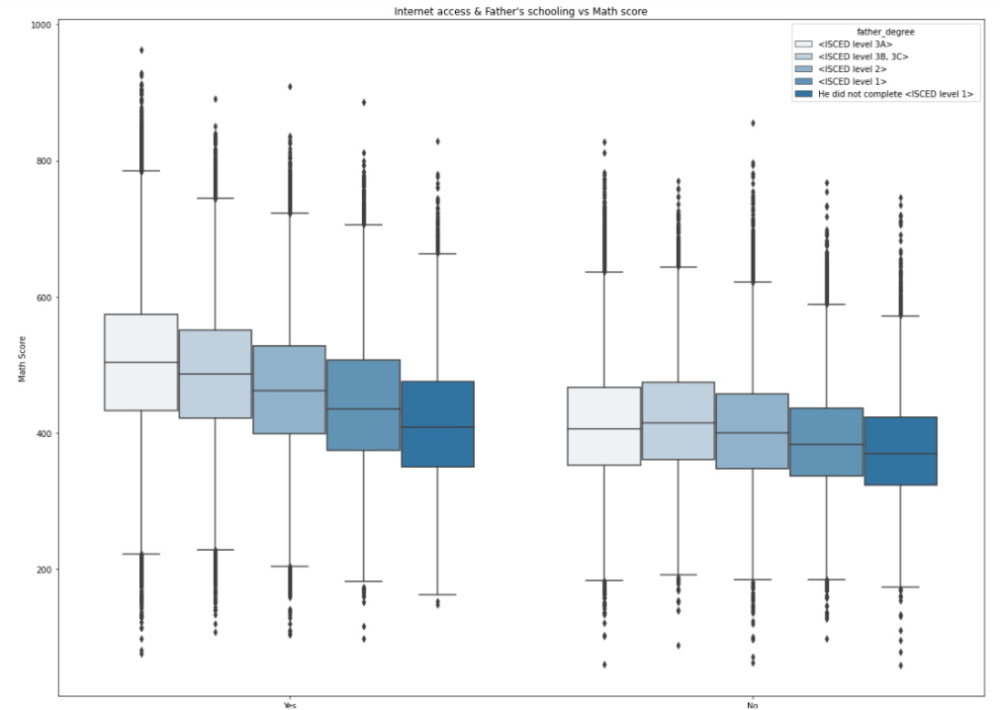
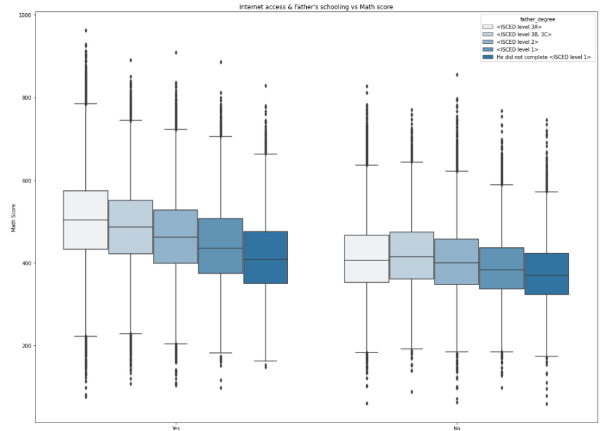
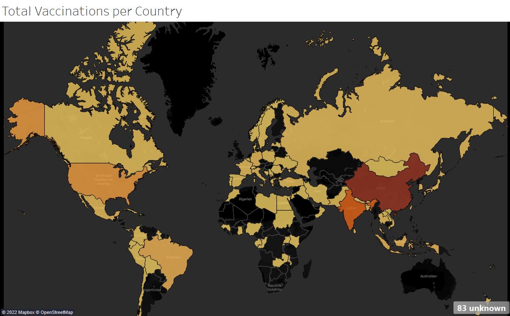

March 30, 2022
The main purpose of this project is to use real world data to wrangle (gather, assess, clean) and then apply analysis with visualizations.
The data used is from the Twitter account ‘WeRateDogs’ which rates people's dogs. Three sources of information are used
to make one final DataFrame which is then used to analyse the data. I completed this project as part of Udacity's Data Analyst program.
 

The PISA measures 15-year-olds abilities in math,
reading and science all over the world. The data contains responses from individual students, school principals and parents. In this investigation I examined which variables have an impact on the scores and how the countries compare to each other.

A Tableau dashboard to better understand the spread and impact of COVID 19. Data was collected in the previous Covid project using SQL queries.
Here I focus on visualizing total cases, percent mortality, and the spread of COVID over time.

This project focuses on pandas library usage and simple statistics methods to perform descriptive analysis on the
bikeshare data from three major U.S. cities - Chicago, Washington, and New York City - to display information such as most popular days or most common stations.
As part of this project, I sought to understand whether the company should introduce a new site or keep the old site.
To do this, I use probability, A/B testing, and regression.
With this dataset provided by the World Bank, I used SQL to find areas of concern,
as well as areas where there is more forest in 2016 than in 1990. The queries use joins, views, subquaries, and other tools to analyze the dataset.
This project is part of the Udacity course "Introduction to SQL".
This project focuses on queries to gain insight of covid data provided by ourworldindata.org. At the end of the
project, I also make an effort to find some correlations.

In this data analysis example, I analyze a dataset of movies to draw various conclusions. I will touch on cleaning data, understading and interpreting some
basic statistics and discover some patterns.
For this task I use mostly Pandas, Statsmodels and Matplotlib.